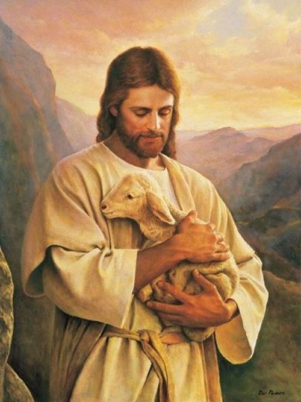

JESUS CHRIST
The Primordial
Sacrament
Primordial means first, original, or fundamental. Jesus is called the Primordial Sacrament because He is the fullest and original visible expression of God’s love and grace. He is the perfect sign and presence of God’s love among humanity.
Through His words, actions, compassion, death, and resurrection, Jesus reveals who God is and invites us into a relationship with Him.

UNDERSTANDING THE SACRAMENT
Why is Jesus called a sacrament?
Visible
Jesus lived among humanity and made God's love visible through His life and ministry.
God's Love
Jesus shows us the Father's mercy, compassion, forgiveness, and love.
God's Grace
Through Christ, we receive God's grace and are invited to live a life of faith.
Jesus and the Seven Sacraments
The Seven Sacraments were instituted by Christ and entrusted to the Church. They are sacred signs through which God's grace is communicated to us. Through the sacraments, Christ continues to be present and active in the life of the Church.
The Church therefore continues Christ's mission by celebrating the sacraments and helping people encounter God's grace throughout their lives.